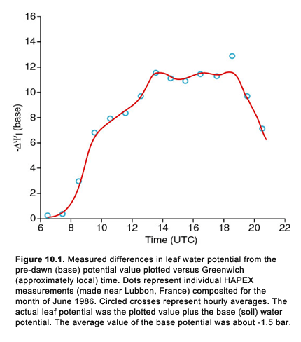
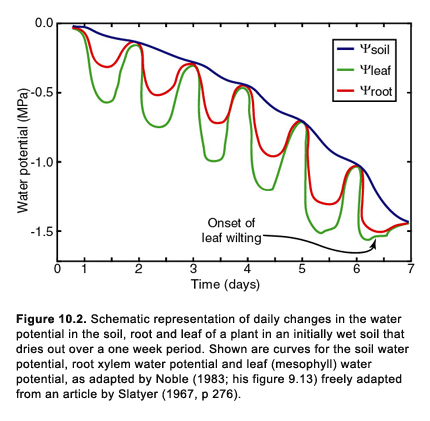

Home
Home

We have seen that in a dense vegetation canopy almost all the latent heat flux comes from the plants. Just about all of that comes through the leaves and almost all of that through the stomates. Look around you and you will see that the leaves on most plants are confined to the upper third of the height of the plant. Of course, most of the sunlight is trapped in the upper third of the canopy, so, if you were a plant, why bother putting leaves any lower down ? You might well ask: why bother to grow so high in the first place, if most of the leaves are confined to a relatively shallow layer near the top ? The answer has to with keeping up with the Jonses, so to speak. If everyone is growing just a little higher than you are in order to steal your sunlight, then you too must grow up higher to stay in competition for the precious life-giving radiation. The bucolic picture of nature as benevolent and peaceful is misleading. Wall Street has nothing on nature; the competition amongst plants in the wild is fierce and deadly, if not a bit slow and silent. You might say that its a jungle out there !
Yet plants do arrive at compromises, at least within a species. Trees of a single species growing in a particular environment evenutally settle on a height which is more or less the same for all mature trees in that lot. New trees will have to struggle for themselves (or die) but the trees eventually stop growing beyond a certain height. It takes work to make a big tree, even if the tall timber has its advantages. The point is, that water and therefore sap must be pumped (or rather pulled) from the root zone to the top of the canopy before it can be evaporated or used to make more tree or leaves. Somehow the leaves need to know how much water is available in the root zone and pump it up to the leaves about the same rate as is being transpired1. The formalism for expressing how water is lifted to the leaves and how the leaf water status may affect the stomatal resistance constitutes the focus of this scenario.
1. This is only true if the plant itself does not use its stored water for transpiration. Plants have the capacity for storing water in their leaves, stems and roots and they make this water available as needed. Our model can accommodate a water flux to and from storage. In general, this flux is relatively small, however.
Water potential is one of the most difficult concepts to understand. One reason for the confusion with regard to water potential is that it has various definitions depending on what water potential one is referring to. In addition to this the use of the concept of water potential in many different disciplines has generated a babble of terminology and some erroneous definitions. Water potential is used to describe the water status2 of the soil and cells within leaves, although the processes involved are vastly different. Nevertheless, water potential is a useful concept because it can be used to describe the flow of liquid water through soils and through cell walls in the plant, - from higher to lower water potential across a resistance. This is the essence of the so-called 'K-theory', which forms the basis for our resistance laws referred to in these scenarios. Thus, it is customary to express the flux of liquid water Fw as a resistance law, similar to Eqn. 3a, in which a resistance (Z) exists across a potential drop.

The units of potential are bar3 (or MegaPascals (MPa), where 1 MPa equals 10 bar) and we will make the units of flux in Watts per square metre in order to equate the liquid water flux with the energy fluxes; (Henceforth, in talking about water (as opposed to vapor) flux, we will use the symbol Z, which has the units of bar (W m-2)-1, for resistance and the symbol ψ for potential.) The area unit is understood to be that of the big leaf. The area in question is the leaf area. The symbol Z is used instead of r because the units are no longer expressed as s m-1. We still must convert that to a flux per unit surface area. This resistance law is expressed by Eqn. 10b.
Water potential is generally a negative number, with zero water potential being the value for pure water in equilibrium with its surroundings. Having the units of pressure, water potential also corresponds to an energy per unit volume. As such, we may think of this energy as that required to extract a molecule of water from somewhere, say from a soil particle or from the crevices between them.
2. The extent to which the water can flow or be extracted compared with a base state ie that of pure water.
3. We are still not sure how the plural works with this unit. Is it bar or bars?
As there are many interfaces and pores in soil, the soil water potential may be appreciably less than zero, except for soil at field capacity, when ψsoil (which we will call ψg ) is typically about --0.1 bar. Field capacity is typically about -0.35 by volume for clay and loamy soils and about -0.10 by volume for sand. Check out Hillel (1982; pp 64 - 73) for a further discussion of soil water potential. Since soil water may contain solutes, the osmotic pressure component π is typically between -0.1 and -2 bar. We will ignore this osmotic component of the soil.
Water potential is widely used in soil science and hydrology. It is often referred to as the 'suction' (although we would like to see someone try to create a suction of -15 bar ! If you think that you can do it, we'll furnish the straw). Sometimes water potential is called the pressure (or hydraulic) head (h), which is often expressed in metres rather than in pressure units (the conversion from one to the other is water density times gravitational constant times h, is equal to pressure) as shown in Eqn 10a. Note that h comprises two components: the soil water potential (often referred to as the matric potential, which has no equivalent in the plant) and a gravitational component H. You may see this water potential cited as the Total Hydraulic Potential.
As the amount of soil water decreases, the air - water surface retreats into the crevices between the particles and the soil water potential, sometimes referred to as the soil water tension, becomes more negative; can you physically say why this is ? Hint: The meteorologists among you may like to consider the so called Kelvin equation you may have already seen in the cloud physics part of physical meteorology and make a comparison with the equation given on page 70 in Hillel.
Soil water tension is measured by an instrument called a tensiometer (Hillel, 1982; pp 81 - 83). Various parametric equations exist relating soil water potential to soil water content for different types of soils (Cosby et al., 1984). You will often see the term permanent wilting point used to mean the equivalent soil water content when the volumetric water content is so low that many agricultural crops will not recover. Wilting point is more symbolic than a measurable quantity; it is traditionally assigned the value of -15 bar, Typical values of soil water content at wilting are 12 percent by volume for clay or loamy soils and 3 percent for sand. Of course, the misnomer is that soils do not wilt; plants wilt. To shed some light on this misuse of the term, we will later relate the wilting point to the leaf (rather than the soil) water potential.
As plants modify the osmotic potential across their roots water is drawn into the plant which then moves up the stem against gravity. Since the roots remove water from their immediate surroundings, the water content adjacent to the roots is apt to be lower than that at the same level in the root zone but away from the roots. This results in a decrease in soil water potential from the soil around the roots to the surface of the roots.(This is an important point which we will come back to later on.) Water will also flow upward or downward, but in the former case it can not do so unless the drop in water potential with height is greater than the increase in gravimetric potential with height. Since the change with height in gravimetric potential is generally small (about 0.1 bar per metre), we will henceforth neglect its effect in the resistance equations. The resistance to water flow through the ground is known to be a function of soil water content, and various parameterizations exist relating soil water content to hydraulic conductivity (Cosby et al., 1984).
To enter the roots, the water must flow down a potential gradient, which is conveniently arranged by the plant by changing the osmotic pressure in the roots. Plant roots tend to be very fibrous and fuzzy, thereby having a large surface area (sometimes several hundred square metres ! ) over which water and nutrients within the water can enter the plant. The resistance to the flow of water down this potential is thought to be a function of root mass, among other things, the larger the root mass the smaller the resistance. In the model, this resistance between surrounding soil and the interior of the root surface depends on the soil conductivity, which is, as we have already said, a strong function of soil water content and on the root mass; modeled crudely as a function of plant height. (We assume that the bigger the plant the greater the root mass.)
Once inside the roots, the water flows up through the stem to the leaves through tiny, tube-like channels called xylem. This water motion also takes place across another drop in water potential. This potential drop is related to capillary action and to gradients of osmotic pressure within the plant. Fundamentally it occurs because of the high surface tension of water. Briefly, stated, when one molecule of water moves, for whatever reason, others are dragged along with it. For water to be transported to the leaves, the leaf water potential (specifically the mesophyll water potential ψm see figure 6.1 in scenario 6) must decrease below that of the soil water potential ψg. This relationship between the flux of water through the plant to the leaves (Fw) is expressed by Eqn. 10c.
The meaning of leaf water potential becomes clearer when one watches a measurement. Leaf water potential, more precisely, the mesophyll potential, was, until fairly recently, customarily measured with a pressure chamber device, sometimes called a 'pressure bomb'. A piece of a leaf is inserted in a chamber, which is allowed to undergo an increase in pressure. When the pressure reaches the value of the leaf water potential, water is driven from the intercellular spaces of the leaf and beads of it begin to form on the outside of the leaf. A pressure gage, attached to the housing, is used to record the value of pressure at beading. The device is a bit crude and bulky, and the uncertainty in making a field measurement is on the order of about 1 bar.It is also a tedious measurement to make and the device has recently been replaced by a more sophisticated apparatus that does not requre the death of a leaf to make the measurement. (The significance of this uncertainty will be elaborated upon in a later scenario)
There is also a further drop in water potential between the mesophyll in the leaf and the epidermis, specifically the guard cells. This potential drop is not associated directly with the rate of water flux in the plant but may be correlated with the rate of vapor flux through the leaf cuticle and with the vapor pressure deficit between the stomatal cavities and the leaf boundary layer. The epidermal leaf water potential ψe may constitute a link between the guard cells and the mesophyll and hence the water potentials throughout the plant. Epidermal leaf water potential is very difficult to measure directly without sophisticated equipment. Later, we will touch on its possible significance.
Simulation # 1
Run the base case scenario for vegetation but examine the leaf and soil water potentials during the day. Do this again for a lower value of root zone moisture availability (e.g. 0.45).
Simulation # 2
Rerun the base case but increase the xylem resistance from 0.05 (current default value) to 0.10 bar (W m-2)-1. Before perfoming this simulation, ask yourself what will happen to the leaf water potential and the stomatal resistance now that you have increased the denominator in Eqn. 10b, assuming that this equation and Eqn. 7c must both be satisfied. See if your intuition holds up. What changes are occurring in transpiration and in leaf water potential during the mid morning and near midday ? (If nothing strikes your attention, try this last simulation with a root zone moisture availability of 0.45, recalling what happened when you reduced moisture availability to 0.45 in a previous vegetation scenario.) Do you see a pattern that resembles day 6 in Figure 10.2?

Terms to look up
bar (scientific definition please)
pressure head
hydraulic head
soil water tension
tensiometer
permanent wilting point
xylem
mesophyll water potential
soil water potential
epidermal leaf water potential
osmotic potential
osmotic pressure